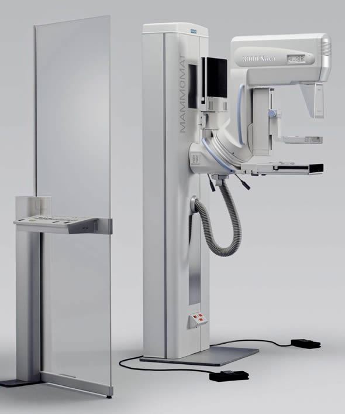

Mammography (also called mastography) is the process of using low-energy X-rays (usually around 30 kVp) to examine the human breast for diagnosis and screening. The goal of mammography is the early detection of breast cancer, typically through detection of characteristic masses or microcalcifications.
Like all X-rays, mammograms use doses of ionizing radiation to create images. These images are then analyzed for any abnormal findings. It is normal to use lower-energy X-rays, typically Mo (K-shell x-ray energies of 17.5 and 19.6 keV) and Rh (20.2 and 22.7 keV) than those used for radiography of bones. Ultrasound, ductography, positron emission mammography (PEM), and magnetic resonance imaging (MRI) are adjuncts to mammography. Ultrasound is typically used for further evaluation of masses found on mammography or palpable masses not seen on mammograms. Ductograms are still used in some institutions for evaluation of bloody nipple discharge when the mammogram is non-diagnostic. MRI can be useful for further evaluation of questionable findings as well as for screening pre-surgical evaluation in patients with known breast cancer to detect any additional lesions that might change the surgical approach, for instance from breast-conserving lumpectomy to mastectomy. Other procedures being investigated include tomosynthesis.

A mamography machine
Uses
Mammograms are used as a screening tool to detect early breast cancer in women experiencing no symptoms. They can also be used to detect and diagnose breast disease in women experiencing symptoms such as a lump, pain, skin dimpling or nipple discharge.
Screening Mammography
Mammography plays a central part in early detection of breast cancers because it can show changes in the breast up to two years before a patient or physician can feel them. Current guidelines from the U.S. Department of Health and Human Services (HHS) and the American College of Radiology (ACR) recommend screening mammography every year for women, beginning at age 40. Research has shown that annual mammograms lead to early detection of breast cancers, when they are most curable and breast-conservation therapies are available.
The National Cancer Institute (NCI) adds that women who have had breast cancer, and those who are at increased risk due to a family history of breast or ovarian cancer, should seek expert medical advice about whether they should begin screening before age 40 and the need for other types of screening. If you are at high risk for breast cancer, you may need to obtain a breast MRI in addition to your annual mammogram.
Diagnostic Mammography
Diagnostic mammography is used to evaluate a patient with abnormal clinical findings—such as a breast lump or nipple discharge—that have been found by the woman or her doctor. Diagnostic mammography may also be done after an abnormal screening mammogram in order to evaluate the area of concern on the screening exam.
Basic Projections
Craniocaudal(cc)
Mediolateral(Mlo)
Suplementary Views
true lateral view - 90º view
mediolateral view - ML view
lateromedial view - LM view
lateromedial oblique view - LMO view
late mediolateral view - late ML view
step oblique views
spot view - spot compression view
double spot compression view
magnification view(s)
exaggerated craniocaudal views - exaggerated CC views
XCCL view
XCCM view
axillary view - axillary tail view
cleavage view - valley view
tangential views
caudocranial view - reversed CC view - 180° CC view
bullseye CC view
rolled CC view
elevated craniocaudal projection
caudal cranial projection
20° oblique projection
inferomedial superolateral oblique projection
Eklund technique
Video
Courtesy: Youtube videos by Manipal Hospitals
(needs internet connection)